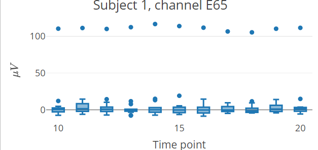
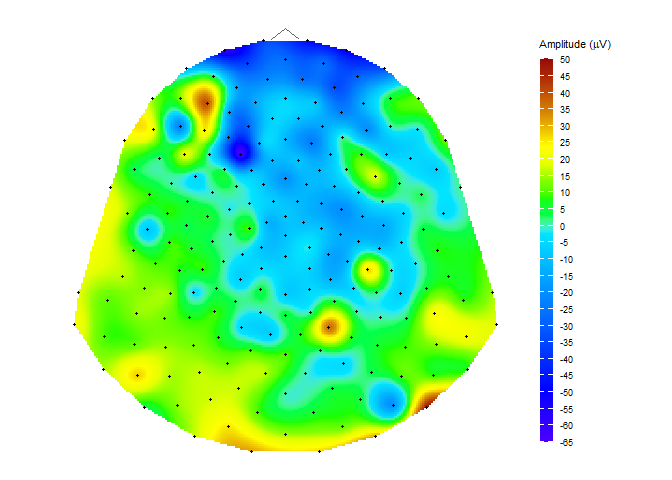

Overview
The name diegr comes from Dynamic and Interactive EEG Graphics using R. The diegr package enables researchers to visualize high-density electroencephalography (HD-EEG) data with animated and interactive graphics, supporting both exploratory and confirmatory analyses of sensor-level brain signals.
The package diegr includes:
- interactive boxplots (
boxplot_epoch,boxplot_subject,boxplot_rt) - interactive waveforms (
interactive_waveforms) - topographic maps in 2D (
topo_plot) - scalp plots in 3D (
scalp_plot) - functions for computing summary statistics, baseline correction, pointwise and jackknife mean (
summary_stats_rt,baseline_correction,compute_mean) - functions for easy selection of subdata or region of interest (
pick_data,pick_region) - functions for plotting the mean with pointwise confidence interval (
plot_time_mean,plot_topo_mean) - animations of time course of the raw signal or the average in 2D and 3D (
animate_topo,animate_topo_mean,animate_scalp)
Installation
You can install the current version of diegr from CRAN with:
install.packages("diegr")or the latest development version from GitHub with:
# install.packages("devtools")
devtools::install_github("gerslovaz/diegr") Data
Because of large volumes of data obtained from HD-EEG measurements, the package allows users to work directly with database tables (in addition to common formats such as data frames or tibbles). Such a procedure is more efficient in terms of memory usage.
The database you want to use as input to diegr functions must contain columns with the following structure:
-
group- ID of groups, -
subject- ID of subjects, -
sensor- sensor labels, -
epoch- epoch numbers, -
condition- labels of experimental condition, -
time- numbers of time points (as sampling points, not in ms), -
signal- the EEG signal amplitude in microvolts (in most functions it is possible to set the name of the column containing the amplitude arbitrarily).
Note: It is not necessary for the data to contain all variables, but if it does, they must be named according to the structure presented above.
The package contains some included training datasets:
-
epochdata: epoched HD-EEG data (anonymized short slice from big HD-EEG study presented in Madetko-Alster, 2025) for 2 subjects and 204 selected sensors in 50 time points, -
HCGSN256: a list with Cartesian coordinates of HD-EEG sensor positions in 3D space on the scalp surface and their projection into 2D space -
rtdata: response times (time between stimulus presentation and pressing the button) from the experiment involving a simple visual motor task (anonymized short slice from big HD-EEG study presented in Madetko-Alster, 2025).
For more information about the structure of built-in data see the package vignette vignette("diegr", package = "diegr").
Quick examples
Interactive boxplot
This is a basic example which shows how to plot interactive epoch boxplots from chosen electrode in different time points for one subject:
epochdata |>
pick_data(subject_rg = 1, sensor_rg = "E65") |>
boxplot_epoch(amplitude = "signal", time_lim = c(10:20))
Note: The README format does not allow the inclusion of plotly interactive elements, only the static preview of the result is shown.
Topographic map
data("HCGSN256")
# creating a mesh
M1 <- point_mesh(dimension = 2, n = 30000, type = "polygon", sensor_select = unique(epochdata$sensor))
# filtering a subset of data to display
data_short <- epochdata |>
pick_data(subject_rg = 1, time_rg = 15, epoch_rg = 10)
# or you can use dplyr::filter()
# dplyr::filter(subject == 1 & epoch == 10 & time == 15)
# function for displaying a topographic map of the chosen signal on the created mesh M1
topo_plot(data_short, amplitude = "signal", mesh = M1)
Computing and displaying the average in time domain
Compute the average signal for subject 2 from the channels E65 and E34 (exclude the oulier epochs 14 and 15) and then display it along with CI bounds (use plot_time_mean conditioned by sensor)
# extract required data
edata <- epochdata |>
pick_data(subject_rg = 2, sensor_rg = c("E34", "E65"), epoch_rg = 1:13)
# baseline correction
data_base <- baseline_correction(edata, baseline_range = 1:10)
# compute average
data_mean <- data_base |>
compute_mean(amplitude = "signal_base", type = "point", domain = "time")
# plot the average line with CI
plot_time_mean(data = data_mean, t0 = 10, condition_column = "sensor", legend_title = "Sensor")
For detailed examples and usage explanation, please see the package vignette: vignette("diegr", package = "diegr").
References Madetko-Alster N., Alster P., Lamoš M., Šmahovská L., Boušek T., Rektor I. and Bočková M. The role of the somatosensory cortex in self-paced movement impairment in Parkinson’s disease. Clinical Neurophysiology. 2025, vol. 171, 11-17. https://doi.org/10.1016/j.clinph.2025.01.001
License This package is distributed under the MIT license. See LICENSE file for details.
Citation Use citation("diegr") to cite this package.